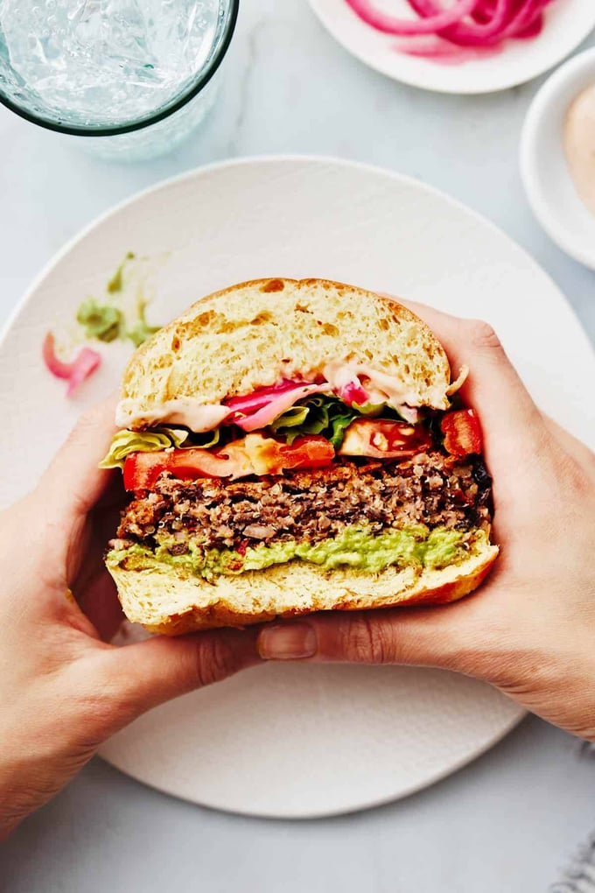

Veggie burgers you’ll want to make again and again! Filling but not too dense, crispy but not crumbly, and
with all the smokiness and yumminess with none of the meat.
INGREDIENTS

These quinoa burgs can be made in minutes with just five-ish ingredients, and honestly, considering the
minimal effort plus the excellent, versatile, and healthyish results, it’s a real weeknight unicorn.
Mint Sauce
- 1/2 cup uncooked quinoa
- one 14-ounce can black beans, rinsed and drained
- 1–2 individual chipotle peppers (not the whole can)
- 1/2 teaspoon each: garlic powder, onion powder, chili powder, cumin
- 1 egg, beaten
- 1 teaspoon salt
- 1/4 cup panko breadcrumbs
INSTRUCTIONS
- Quinoa: Cook quinoa according to package directions. Allow to cool.
- Mix: Place black beans, quinoa, chipotles, and spices, in a food processor. Pulse just a
few times, enough to make the mixture sticky and well-mixed but not completely pureed. Ideally
there will be some chunks of black beans still intact.
- Add egg and panko:Transfer mixture to a bowl. Using a spoon or your hands, mix with egg
and panko. Form into 4 thick burgers.
- Fry burgers:Heat a generous swish of olive oil over medium high heat (nonstick pan works
best here). Add burgers to the pan and fry for a few minutes on each side,
flipping carefully to keep them intact, until they are golden brown and crispy on the outside.
- Serve:Serve on buns with spicy mayo, avocado, lettuce, tomato, red onion (pickled if you
want!), whatever suits your fancy!